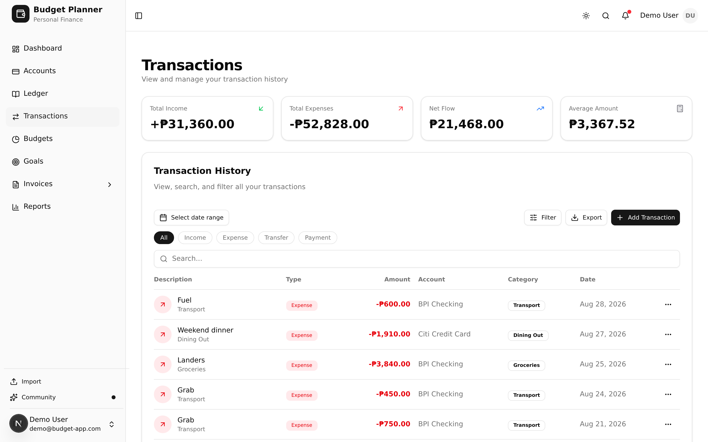
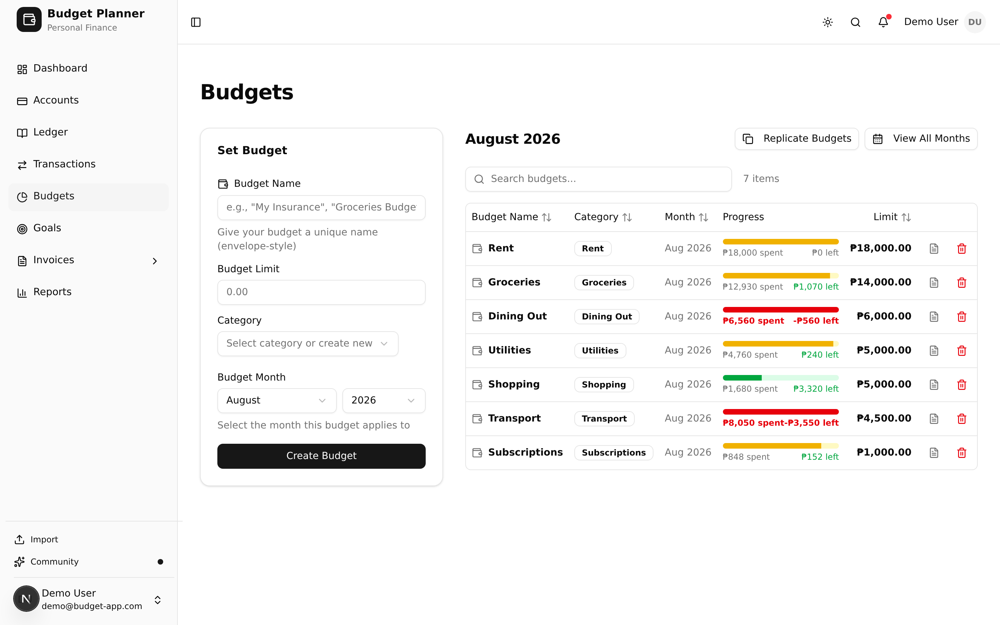

Everything it measures, stated plainly.
No tiered comparison table and no asterisks. This is the whole product as it exists today, plus one honest note about the part that does not exist yet.
The score
Five pillars, weighted, combined into one number out of 100 with a letter grade on each. Computed only from what you logged.
Solvency
Can you cover what you owe?
25%Liquidity
Can you survive an emergency?
20%Savings
Are you keeping enough of what you earn?
20%Debt Management
Is your debt under control?
20%Cash Flow
Is more coming in than going out?
15%The score sharpens as you log more. With thin data it says so rather than guessing.
Getting money in
Unified transactions
Income, expenses, transfers between your own accounts, and payments toward a liability — one table, one filter set, one place to look.
Accounts and ledgers
Cash, bank, savings, credit and loan accounts side by side, each with its own running ledger and an opening balance you can audit back to.
Bulk actions
Select a run of rows and recategorise, move or delete them together instead of one at a time.
CSV import with undo
Map your bank’s columns once. Likely duplicates are flagged before they land, and the whole batch rolls back in a single action.

Deciding where it goes
Envelope budgets
A limit per category per month. Logged expenses move the envelope, so “what is left” is read from your ledger rather than estimated.
Savings goals
Link a goal to the account that actually holds the money. Progress comes from the balance, so it cannot drift from reality.
Emergency fund tracking
A goal type measured in months of runway rather than a flat target, with your own thresholds for what counts as funded.
Reports and monthly digest
Category and account breakdowns, PDF export, and an optional monthly summary by email. One click to unsubscribe.

Billing clients
All shipped. More on invoicing.
Invoices
Business identity, line items, PDF export, and email delivery from inside the app.
Clients
A saved client list so you are not retyping the same billing details every month.
Payment details
Payout methods and a QR code attached to the invoice so a client can pay without asking how.
Invoices and transactions sit in the same app but are not wired together. When a client pays, you log the income yourself.
Not built yet
The AI advisor is the next major feature and is not available. A non-interactive preview sits on the dashboard so you can see the shape of it. It will be announced on the changelog when it works.
Everything above, at no cost.
Free to start. No credit card, no bank connection, no ads.